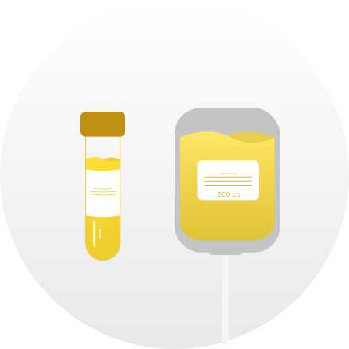

Swab test adalah metode pemeriksaan untuk mendiagnosis virus COVID-19 yang dimana tes ini mengambil sampling dibagian terdalam hidung dan tenggorokan.
TERAPI plasma konvalesen (TPK) merupakan salah satu teknik pengobatan COVID-19 berupa pemberian plasma dari donor pasien covid-19 yang sudah sembuh kepada pasien covid-19 yang masih menderita penyakit tersebut.
Apa syarat untuk menjadi pendonor?
| Berusia minimal 18 tahun dan maksimal 60 tahun | Berat badan minimal 55 Kg |
| Sembuh dari COVID-19, hasil RT PCR negatif 1x berturut-turut | Bebas gejala selama 14 hari setelah sembuh |
Seperti apa alur pelaksanaan terapi plasma konvalesen?
| 1. Pendonor yang memenuhi kriteria akan dihubungi oleh UTD PMI/Rumah Sakit |
| 2. Pendonor diminta mengisi informed consent |
| 3. Pendonor akan dilakukan pengambilan sampel darah untuk skrining,pemeriksaan TB/BB, Hb, Golongan darah dan Tekanan Darah |
|  |
| 4. Pendonor yong memenuhi kriteria dapat dilakukan Plasmaferesis dan diambil Plasma Konvalesen sebanyak 400-500 CC |
| 5. Plasma konvalesen dapat langsung diberikan pada pasien atau disimpan pada suhu -20℃ sampai dengan -30℃ |
| 6. Pendonor dapat kembali, 14 hari setelah mendonorkan plasma |
Bagaimana cara mendaftar?

- Klik daftar atau bisa juga daftar langsung
- Isi nama lengkap dan usia
- Pilih tanggal dan bulan lahir, kemudian isi tahun kelahiran
- NIK bisa dilihat di KTP atau Kartu Keluarga anda
- Pilih tanggal, bulan, dan tahun anda dinyatakan POSITIF, lalu upload surat bukti anda dinyatakan POSITIF
- Pilih tanggal, bulan, dan tahun anda dinyatakan NEGATIF, lalu upload surat bukti anda dinyatakan NEGATIF
- Pastikan semuanya sudah diisi dengan benar, kemudian klik 'daftar'
- Kami akan mengecek data anda
- Jika pendaftar memenuhi kriteria akan dihubungi oleh UTD PMI/rumah sakit